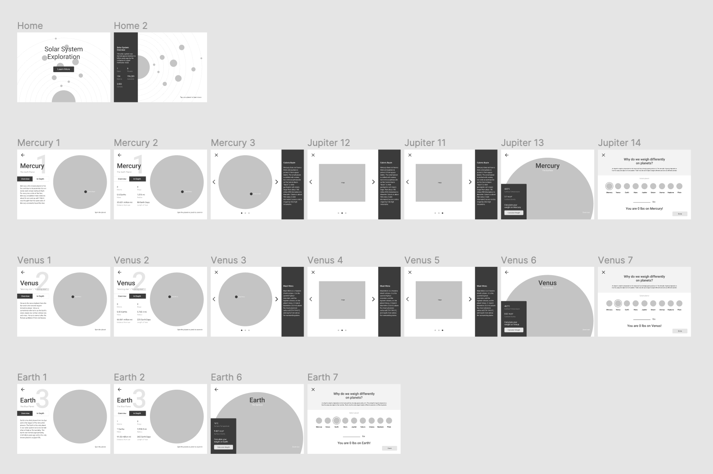

Our solar system is a vast expanse with many planets unlike the next. It may often feel overwhelming learning key details about each planet so why read about it in a textbook when you can navigate your way with ease through an interface.
The goal of this project was to convey information in a way that is still visually appealing and “hands on” in order to facilitate the process of learning.
Design Process
The UI of each planet was identical in layout but different in content, color, and images. This allowed there to be consistency throughout the design. Based on the UX heuristics of Jakob Nielsen this will prevent users from relearning the system and design. The UI followed many of Nielsen’s principles as the focus of this project was to streamline the learning experience for users. Making sure users are comfortable in navigating around the interface was crucial.
Starting out with a low fidelity prototype allowed me to focus on a user centered approach first, and aesthetics afterwards.

Low fidelity prototype
After finalizing the layout of the low fidelity prototype, I was able to move onto aesthetics such as color selections, text, and images. Color was a big factor in aesthetics as it set the overall mood and feel of each planet’s “page”. Selected to match and complement each planet image, the colors help set each of them apart from each other.
High fidelity prototype
Conclusion
The focus on user experience made this project a success. It helped accomplish my goals throughout the project and keep content organized. Using the prototyping feature in figma helped bring my design further to life as it allowed users to actually interact with the product.